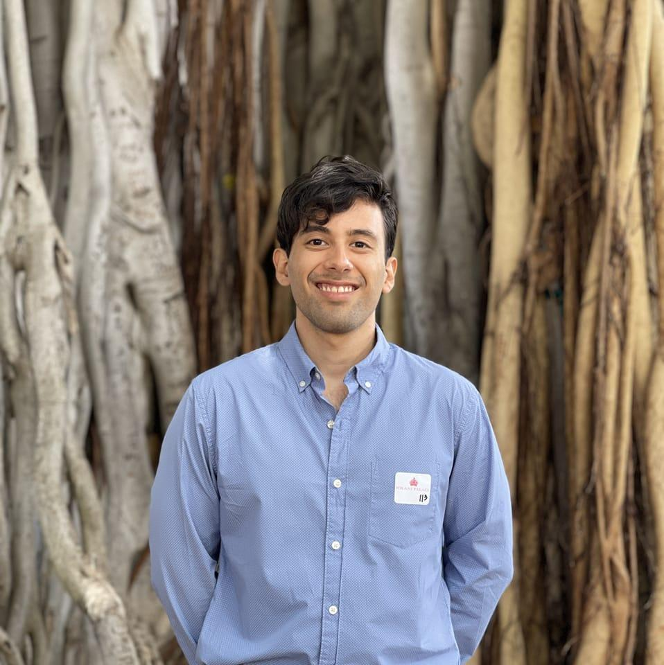

|
Alejandro Lozano I am a PhD candidate at the Stanford Artificial Intelligence Laboratory (SAIL) working on vision-langue foundation models. I'm fortunate to be advised by Serena Yeung-Levy and to be supported by the Arc Institute. My work focuses on multimodal learning, multimodal retrieval-augmentation, agent-based systems and the intersection of those topics with real-world applications, with an emphasis on precision medicine. During my free time, I like to ... I don't have free time ;/ |
 |
{kind=link}
Recent News:
| [March 2025] | Awarded Nvidia grant. |
| [February 2025] | 3 papers accepted to CVPR 2025. |
| [January 2025] | 2 papers accepted to ICLR 2025 |
| [December 2024] | 1 paper accepted to NEJM AI. |
| [September 2024] | 1 paper accepted to NeurIPS 2024. |
Selected Publications |

|
BIOMEDICA: An Open Biomedical Image-Caption Archive, Dataset, and Vision-Language Models Derived from Scientific Literature
Alejandro Lozano *, Min Woo Sun*, James Burgess*, Liangyu Chen, Jeffrey J. Nirschl, Jeffrey Gu, Ivan Lopez, Josiah Aklilu, Anita Rau, Austin Wolfgana Katzer, Collin Chiu, Xiaohan Wang, Alfred Seunghoon Song, Robert Tibshirani, Serena Yeung-Levy Preprint project page / arxiv / code / data *co-first authorship We introduce BIOMEDICA, an open-source framework that transforms the PubMed Central Open Access subset into a comprehensive dataset of over 24 million image-text pairs with expert-guided annotations, enabling state-of-the-art performance in biomedical vision-language models across diverse tasks and domains. |

|
Time-to-Event Pretraining for 3D Medical Imaging
Zepeng Huo*,, Jason Alan Fries*,, Alejandro Lozano *, Jeya Maria Jose Valanarasu, Ethan Steinberg, Louis Blankemeier, Akshay S. Chaudhari, Curtis Langlotz, Nigam H. Shah ICLR 2025 paper *co-first authorship Using a dataset of 4.2 million 2D images and time-to-event distributions across thousands of EHR-derived tasks, we propose a new time-to-event pretraining framework for 3D medical imaging models that leverages large-scale temporal supervision from paired, longitudinal electronic health records. |

|
Video Action Differencing
James Burgess, Xiaohan Wang, Yuhui Zhang, Anita Rau, Alejandro Lozano, Lisa Dunlap, Trevor Darrell, Serena Yeung-Levy ICLR 2025 pdf / benchmark We propose video action differencing, a new task for detecting subtle variations in how actions are performed between two videos. We release a benchmark spaning diverse skilled actions, and a baseline agentic workflow. |

|
Micro-Bench: A Vision-Language Benchmark for Microscopy Understanding
Alejandro Lozano *, Jeffrey Nirschl*, James Burgess, Sanket Rajan Gupte, Yuhui Zhang, Alyssa Unell, Serena Yeung-Levy NeurIPS Datasets & Benchmarks 2024 project page / arXiv / code *co-first authorship A Vision-Language Benchmark for Microscopy Understanding. |
|
|
MicroVQA: A Multimodal Reasoning Benchmark for Microscopy-Based Scientific Research
James Burgess*, Jeffrey J Nirschl*, Laura Bravo-Sánchez*, Alejandro Lozano, Sanket Rajan Gupte, Jesus G. Galaz-Montoya, Yuhui Zhang, Yuchang Su, Disha Bhowmik, Zachary Coman, Sarina M. Hasan, Alexandra Johannesson, William D. Leineweber, Malvika G Nair, Ridhi Yarlagadda, Connor Zuraski, Wah Chiu, Sarah Cohen, Jan N. Hansen, Manuel D Leonetti, Chad Liu, Emma Lundberg, Preprint pdf / benchmark *co-first authorship MicroVQA is an expert-curated benchmark for research-level reasoning in biological microscopy. We also propose a method for making multiple-choice VQA more challenging. |
|
|
Medalign: A clinician-generated dataset for instruction following with electronic medical records
Scott L Fleming*, Alejandro Lozano*, William J Haberkorn*, Jenelle A Jindal*, Eduardo Reis*, Rahul Thapa, Louis Blankemeier, Julian Z Genkins, Ethan Steinberg, Ashwin Nayak, Birju Patel, Chia-Chun Chiang, Alison Callahan, Zepeng Huo, Sergios Gatidis, Scott Adams, Oluseyi Fayanju, Shreya J Shah, Thomas Savage, Ethan Goh, Akshay S Chaudhari, Nima Aghaeepour, Christopher Sharp, Michael A Pfeffer, Percy Liang, Jonathan H Chen, Keith E Morse, Emma P Brunskill, Jason A Fries, Nigam H Shah AAAI 2024 / ML4H 2023 (Best Paper Award) project page / paper / code *co-first authorship Existing question answering datasets for electronic health record (EHR) data fail to capture the complexity of information needs and documentation burdens experienced by clinicians. To address these challenges, we introduce MedAlign, a benchmark dataset of 983 natural language instructions for EHR data. MedAlign is curated by 15 clinicians (7 specialities), includes clinician-written reference responses for 303 instructions, and provides 276 longitudinal EHRs for grounding instruction-response pairs. |

|
Orientation-invariant autoencoders learn robust representations for shape profiling of cells and organelles
James Burgess, Jeffrey J. Nirschl, Maria-Clara Zanellati, Alejandro Lozano, Sarah Cohen, Serena Yeung-Levy Nature Communications 2024 paper / code Unsupervised shape representations of cells and organelles are erroneously sensitive to image orientation, which we mitigate with equivariant convolutional network encoders in our method, O2VAE. |

|
Clinfo. ai: An open-source retrieval-augmented large language model system for answering medical questions using scientific literature
Alejandro Lozano, Scott L Fleming, Chia-Chun Chiang, Nigam Shah Pacific Symposium on Biocomputing 2024 (Oral) paper / code A retrieval-augmented chaing of large language models to answer medical questions using scientific literature. |
TeachingTeaching assistant, CS 235, Computational Methods for Biomedical Image Analysis and Interpretation, Stanford 2022. |
|
I stole this website template from Jon Barron who published his source code here. |